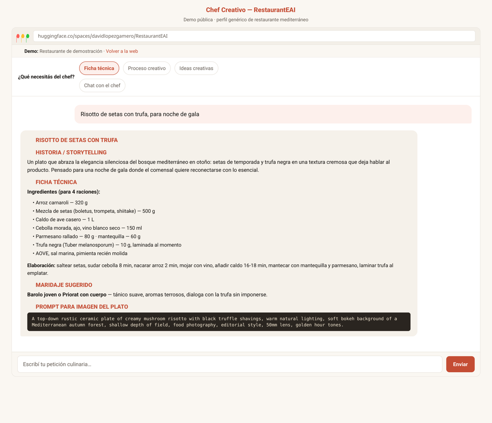
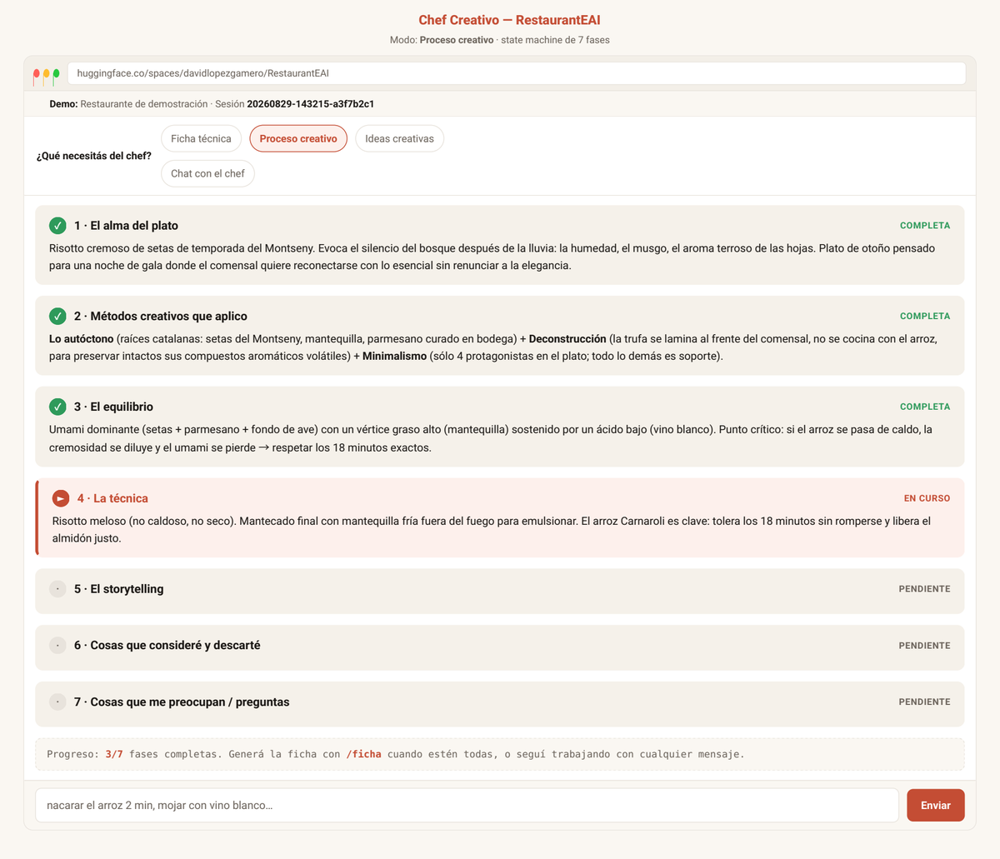
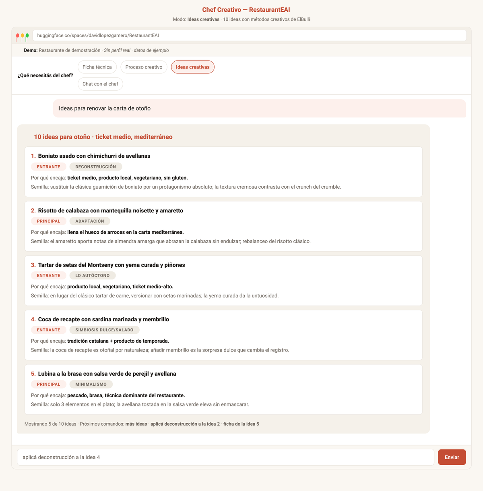
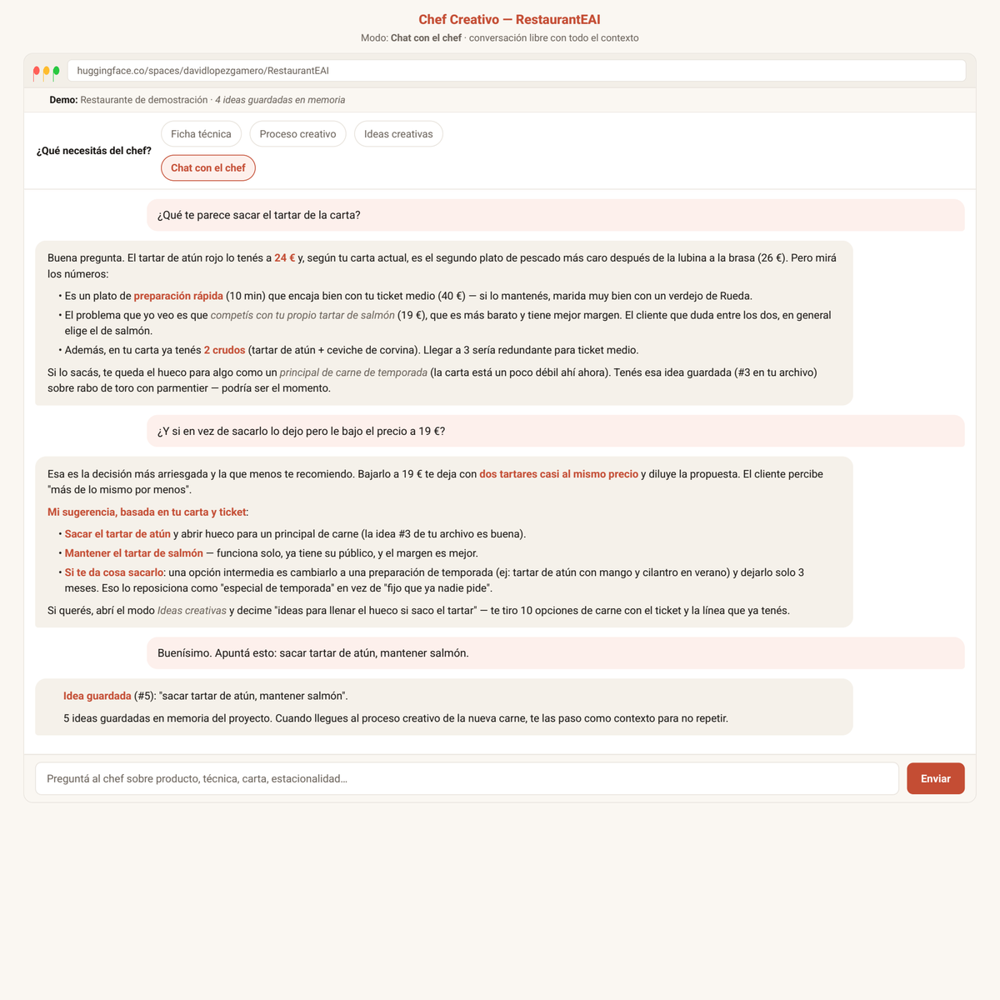

Chef Creativo con IA para hostelería: fichas, proceso creativo, ideas y chat — con el contexto de tu restaurante en mente.
Entre proveedores, temporada y ensayos, sacar platos nuevos se convierte en un proyecto.
Mismas combinaciones de siempre, mismo resultado. La carta no cuenta nada.
La sala, la cocina y los números te comen el día. La creatividad espera.
Cuatro modos reales, todos con el contexto de tu restaurante inyectado (ticket, línea culinaria, carta y estacionalidad).
Describe un plato en lenguaje natural y recibe nombre, historia, ficha técnica, maridaje y prompt para imagen.
Muestra paso a paso cómo piensa el plato — alma, métodos creativos, equilibrio, técnica — y después la ficha final.
Genera 10 ideas que encajan con tu restaurante y refina con métodos creativos de ElBulli.
Conversación libre sobre producto, técnica, carta, estacionalidad y proveedores — con todo tu contexto.
Sin registro, sin instalación, sin terminal. La demo usa un perfil genérico de restaurante mediterráneo, marcado como demo.




El Chef Creativo es código abierto (MIT): puedes usarlo gratis, mirar el código y adaptarlo. Si prefieres que tu restaurante quede configurado y funcionando sin preocuparte de nada, lo implementamos por ti.
Configuramos tu perfil (ticket, carta, temporada, restricciones), lo desplegamos y te enseñamos a usarlo. Tú pones el restaurante; nosotros, la instalación.
No. El software es libre, pero la implementación la hacemos nosotros: configuramos tu perfil, desplegamos y te enseñamos a usarlo.
La demo está online: ábrela y prueba en segundos, sin registro. La primera visita puede tardar un poco en arrancar.
La demo usa un perfil de ejemplo. Tu restaurante (carta, ticket, ideas) vive en tu propia instancia privada; tú controlas tus datos.
Funciona con cualquier línea: pizzería, arrocería, cocina de mercado, alta cocina. Se configura a tu ticket, técnicas y clientela.
Sí. Es código abierto con licencia MIT. Lo que se paga, si lo deseas, es el servicio de implementación y configuración a medida.